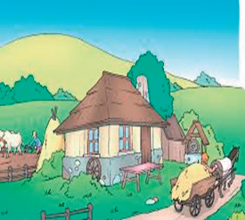
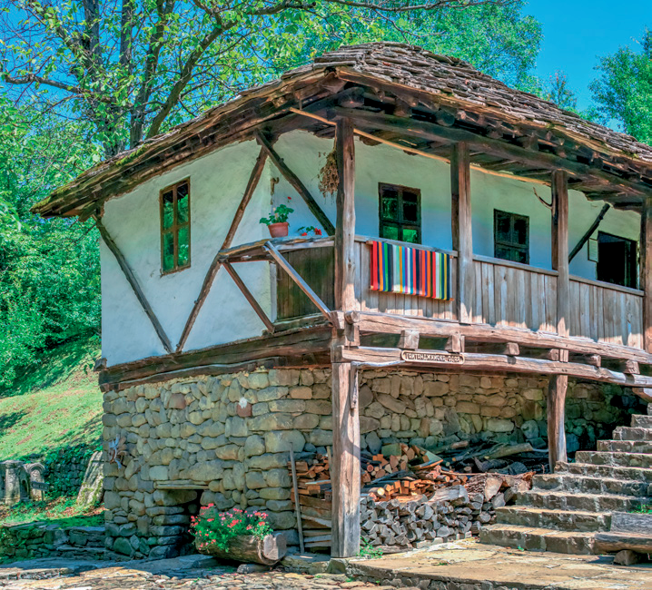
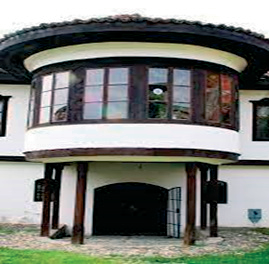

Objektet e banimit në vendin tonë

Kasolle është quajtur në të kaluarën ndërtesa e thjeshtë përdhese (shtëpi e thjeshtë), që ka shërbyer për banim. Kasollja ka qenë e ndërtuar nga gardhi, e lyer brenda e jashtë me baltë të përzier me kashtë, kurse çatinë e kishte të mbuluar me tallë misri ose me kashtë.

Me kalimin e kohës u ndërtuan shtëpitë përdhese me arkitekturë të thjeshtë popullore. Ato u ndërtuan me material të fortë prej qerpiçësh. Shtëpia kishte zakonisht mbulojën e gjatë, që ishte vazhdimi i shtëpisë, i quajtur hajat. Secila shtëpi kishte një dhomë më të madhe se të tjerat, që ishte dhoma e ndenjjes.

Shtëpitë tradicionale me kate ishin, të njohura në Kosovë. Ato ndërtoheshin nga familjet e mëdha.